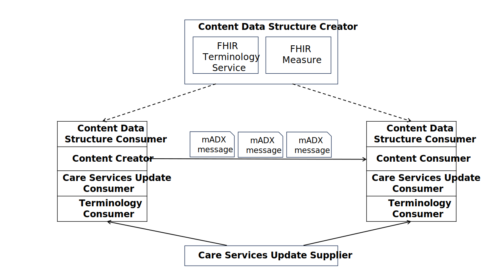

Mobile Aggregate Data Exchange
3.0.0-comment - ballot

Mobile Aggregate Data Exchange
3.0.0-comment - ballot

This page is part of the Mobile Aggregate Data Exchange (v3.0.0-comment: Publication Ballot 1) based on FHIR (HL7® FHIR® Standard) R4. The current version which supersedes this version is 3.0.0. For a full list of available versions, see the Directory of published versions
The Mobile Aggregate Data Exchange (mADX) Profile enables interoperable public health reporting of aggregate health data, similar to the Aggregate Data Exchange (ADX) Profile upon which mADX is based. mADX will typically be used to represent routinely reported aggregate data such as the numerators and denominators which can be used in the construction of public health indicators. Please refer to ADX Section X for more details on the needs for this profile. The central concern of mADX is the reporting of data tuples. These tuples are sets of values which are keyed according to a data element subject, a temporal dimension, and a spatial dimension. An example data tuple is the number of live births recorded in January 2015 at Nyamandhlovu Clinic. These tuples may include one or more additional disaggregating dimensions by specifying a code list. mADX is designed to be an alternative to the current ADX framework. It facilitates the transactions with the use of FHIR for increased interoperability and use of FHIR services, such as those described in Mobile Care Services Discovery (mCSD). Users of the current ADX framework may wish to utilize these FHIR services. mADX defines a Content Data Structure Creator that enables an implementing jurisdiction to formally define the aggregate health data to be exchanged. Metadata for the aggregate data is defined using a profile of the HL7 FHIR Measure resource and uses a HL7 FHIR Terminology service, referred to as a Data Structure Definition (DSD). mADX defines a Content Data Structure Consumer that consumes a Measure. The Content Creator and Consumer Actors utilize the Measure to construct and validate mADX messages containing aggregate health data in their jurisdiction. The mADX Profile contains few constraints regarding the nature and source of coding systems, and there are liberal extension points intended to allow mADX content to be embedded within different envelopes and its message attributes extended in locally meaningful ways.
This section defines the actors, transactions, and/or content modules in this implementation guide. General definitions of actors are given in the Technical Frameworks General Introduction Appendix A at http://ihe.net/Technical_Frameworks.
Table 1:6.1-1 lists the transactions for each actor directly involved in the mADX Profile. To claim compliance with this profile, an actor shall support all required transactions (labeled “R”) and may support the optional transactions (labeled “O”).
Table 1:6.1-1: mADX Profile - Actors and Transactions
| Actors | Transactions | Initiator or Responder | Optionality | Reference |
|---|---|---|---|---|
| Content Creator | Send Aggregate Report [QRPH-58] | Initiator | R | QRPH TF-2: 3.58 |
| Content Consumer | Send Aggregate Report [QRPH-58] | Responder | R | QRPH TF-2: 3.58 |
| Content Data Structure Consumer | Retrieve Aggregate Report Definition [QRPH-59] | Initiator | R | QRPH TF-2: 3.59 |
| Content Data Structure Creator | Retrieve Aggregate Report Definition [QRPH-59] | Responder | R | QRPH TF-2: 3.59 |
Table 1:6.1-2 lists the content module(s) defined in the mADX Profile. To claim support for this profile, an actor shall support all required content modules (labeled “R”) and may support optional content modules (labeled “O”).
Table 1:6.1-2: mADX Profile - Actors and Content Modules
| Actors | Content Modules | Optionality | Reference |
|---|---|---|---|
| Content Data Structure Creator | mADX Measure | R | QRPH TF-3: 8.2-8.3, 8A, 8E |
| Content Data Structure Consumer | mADX Measure | R | QRPH TF-3: 8.2-8.3, 8A, 8E |
| Content Creator | mADX Message | R | QRPH TF-3: 8G |
| Content Consumer | mADX Message | R | QRPH TF-3: 8G |
| Care Services Update Supplier | mCSD/ Request for Care Services Updates | O | ITI mCSD: Sec 46.1 |
| Care Services Update Consumer | mCSD/ Request for Care Services Updates | O | ITI mCSD: Sec 46.1 |
| Terminology Consumer | SVCM/Query Value Set | O | ITI SVCM: 51.1 |
| Terminology Consumer | SVCM/Query Code System | O | ITI SVCM: 51.1 |
| Terminology Consumer | SVCM/Expand Value Set | O | ITI SVCM: 51.1 |
| Terminology Consumer | SVCM/Lookup Code | O | ITI SVCM: 51.1 |
| Terminology Consumer | SVCM/Validate Code | O | ITI SVCM: 51.1 |
| Terminology Consumer | SVCM/Query Concept Map | O | ITI SVCM: 51.1 |
| Terminology Consumer | SVCM/Translate Code | O | ITI SVCM: 51.1 |
The actors in this profile are described in more detail in the sections below.
The mADX Profile defines the process for a Content Data Structure Creator to develop an mADX Measure which describes the base constraints for a valid mADX data message and any required code sets for disaggregation dimensions of the reported value. Individual jurisdictions may extend the mADX Measure by specifying relevant code sets and additional dimensions of data to satisfy their message exchange use cases. A Content Data Structure Creator defines a Measure Resource to be exchanged between a Content Creator and Content Consumer. Typically, the Content Data Structure Creator will be an implementing jurisdiction such as a ministry of health, a global non-government organization (NGO) or a donor. A Content Data Structure Creator shall create a normative mADX HL7 FHIR Measure Resource. The HL7 FHIR Measure resource shall reference HL7 FHIR Value Sets from a compliant HL7 FHIR Terminology Service. These HL7 FHIR Values Sets shall include the allowed codes for additional non-spatial disaggregation dimensions.
A Content Data Structure Consumer consumes a Measure resource produced by a Content Data Structure Creator. The system implementing this actor role will often be a Content Creator, though this grouping is optional. The Measure resource can be used to configure the Content Creator to produce valid content.
A Content Creator SHALL be able to generate an HL7 FHIR Measure that is conformant to mADX and can transmit an mADX message to the Content Consumer. A Content Creator, under the Validate mADX Message Option, shall be grouped with a Care Services Update Consumer and a Content Data Structure Consumer.
A Content Consumer SHALL be able to process a data stream that is conformant to the format defined by the Measure resource produced by the Content Data Structure Creator. What it means to process the XML stream depends on the nature of the processor. For example it might persist the individual data tuples, or it might format them for display or perform further aggregation on the data. A Content Consumer, under the Validate mADX Message Option, SHALL be grouped with a Care Services Update Consumer and a Content Data Structure Consumer.
The Care Services Update Supplier is defined in the mCSD Profile in Section 1:46.1.1.4.
mADX leverages location services from Care Services Update Supplier. The Care Services Update Supplier provides the set of valid spatial dimensions as HL7 FHIR locations and is the source of the location data referenced in an ADX message. The list of valid locations is determined by the implementing jurisdiction.
The Care Services Update Consumer is defined in the mCSD Profile in Section 1:46.1.1.3.
The transactions in this profile are summarized in the sections below.
This transaction is used to communicate aggregate health data from the Content Creator to the Content Consumer at the end of each reporting cycle.
For more details see the detailed transaction description.
This transaction is used to obtain the FHIR Measure in order to structure and validate a given FHIR MeasureReport.
For more details see the detailed transaction description.
Options that may be selected for each actor in this implementation guide, are listed in Table 1:6.2-1 below.
Table 1:6.2-1: mADX - Actor Options
| Actor | Option Name | Reference |
|---|---|---|
| Content Data Structure Creator | No options defined | -- |
| Content Data Structure Consumer | Validate mADX Message | 1:6.2.1 |
| Content Creator | Validate mADX Message | 1:6.2.1 |
| Content Consumer | Validate mADX Message | 1:6.2.1 |
| Terminology Consumer | Validate mADX Message | 1:6.2.1 |
The Content Creator or Content Consumer Actors, SHALL be grouped with the Content Data Structure Consumer, the SVCM Terminology Consumer and the mCSD Care Services Updates Consumer if the Validate mADX Message Option is used, which includes the Retrieve Aggregate Report Definition [QRPH-59] transaction.
There are no Required Actor Groupings defined except in the Validate mADX Message Option where the Content Creator or Content Consumer Actors, SHALL be grouped with the Content Data Structure Consumer, the SVCM Terminology Consumer and the mCSD Care Services Update Consumer as indicated in Section 1:6.2.1.
Table 1:6.3-1: Actor Groupings
| mADX Actor | Actor to be Grouped With | Reference | Content Bindings Reference |
|---|---|---|---|
| Content Creator | SVCM / Terminology Consumer | Section 1:6.2.1 | -- |
| mCSD / Care Services Update Consumer | Section 1:6.2.1 | -- | |
| Content Data Structure Consumer with Validate mADX Message Option | Section 1:6.2.1 | -- | |
| Content Consumer | SVCM / Terminology Consumer | Section 1:6.2.1 | -- |
| mCSD / Care Services Update Consumer | Section 1:6.2.1 | -- | |
| Content Data Structure Consumer with Validate mADX Message Option | Section 1:6.2.1 | -- |
This section shows how the transactions/content modules of the profile are combined to address the use cases.
Use cases are informative, not normative, and “SHALL” language is not allowed in use cases.
The mADX Profile defines an HL7 FHIR Measure Resource. The Measure Resource defines the metadata needed to validate an mADX message for representing aggregate health data. More information on the characteristics of data being sent in an mADX message is provided in Section X.4 of the ADX Profile.
This profile sets constraints on the mandatory dimensions which shall be in a Measure Resource . Additional data element dimensions may be defined as necessary within the context of use - for example, within a particular country or implementing jurisdiction. Similarly, whereas mADX assumes that code sets and other structural metadata will be shared with Content Creators and Content Consumers under the Validate Option as described in 1:6.2.1. These inputs to the mADX message schema definition are conceptually illustrated by Figure 1:6.4-1 in which the Content Creator and Content Consumer are both enacting the Validate mADX Message Option.

Figure 1:6.4-1: An Illustration of mADX Profile Inputs and Outputs
The following concepts are used in this profile:
The use cases that mADX is solving are the same as those defined in Section X.4.2. of the ADX Profile.
The mADX Profile does not support the exchange of person-centric health information. Therefore, this profile does not specify security mechanisms, such as the ITI Audit Trail and Node Authentication (ATNA) Profile, that would be required where is the case. Implementers should nevertheless be sensitive to the possibility of approximate personal identification arising from aggregate data derived from small population sets. Transport of such data should be safeguarded according to jurisdictional guidelines. Person-centric Health Information (PHI) should be de-identified according to jurisdictional guidelines, however recommendations can be found in the IT Infrastructure Handbook De-Identification.
mADX subsumes the functionality of ADX in a FHIR format and expands it.
The Mobile Care Services Discovery (mCSD) Profile supports RESTful queries for organization units via the FHIR Location resource. Locations are physical care delivery sites such as hospitals, clinics, health outposts, physician offices, labs, pharmacies. Locations also include political administrative area, such as a village district or region. A Location has a unique identifier and may have geographic attributes (address, geocode), contact attributes, and other attributes such as hours of operation. This location data is made available via the Request for Care Services Updates transaction initiated by a Care Services Update Consumer against a Care Services Update Supplier. See ITI TF-2: Appendix Z.8 for common mobile security considerations.
Under Section 1:6.2.1 Validate mADX Message Option, a Content Creator or a Content Consumer shall be grouped with the Care Services Update Consumer to ensure that it has an updated list of the resources for the reporting locations. The list may be used to validate the reporting locations sending MeasureReports under the validation option described in this profile.
Additionally, a Care Services Update Supplier that contains information on health care practitioners can also be used to generate an mADX message to satisfy the use case in Section X.4.2.2 of ADX in which a district health manager running an aggregate report on staffing levels by location and health care practitioner role.
The Sharing Valuesets, Codes and Maps (SVCM) Profile defines an interface for the exchange of nomenclature and terminology mappings between code systems in a centrally managed setting. These terminology sets are most effective, and intended, to be used across geographies and disciplines in a standardized fashion to maximize interoperability.
Like with mCSD, under the 1:6.2.1 Validate mADX Option, a Content Creator or Content Consumer shall be grouped with an SVCM Terminology Consumer to support any transactions defined in SVCM for the querying, expansion, lookup, or validation of valuesets and terminologies.
The terminology mappings can be used in conjunction with the retrieval of the DSD defined by the Retrieve Aggregate Report Definition [QRPH-59] to validate the messages being sent or received in the Send Aggregate Report [QRPH-58] transaction.
IG © 2021+ IHE QRPH Technical Committee. Package ihe.qrph.madx#3.0.0-comment based on FHIR 4.0.1. Generated 2025-03-24
Links: Table of Contents |
QA Report
| New Issue | Issues
Version History |
 |
Propose a change
|
Propose a change